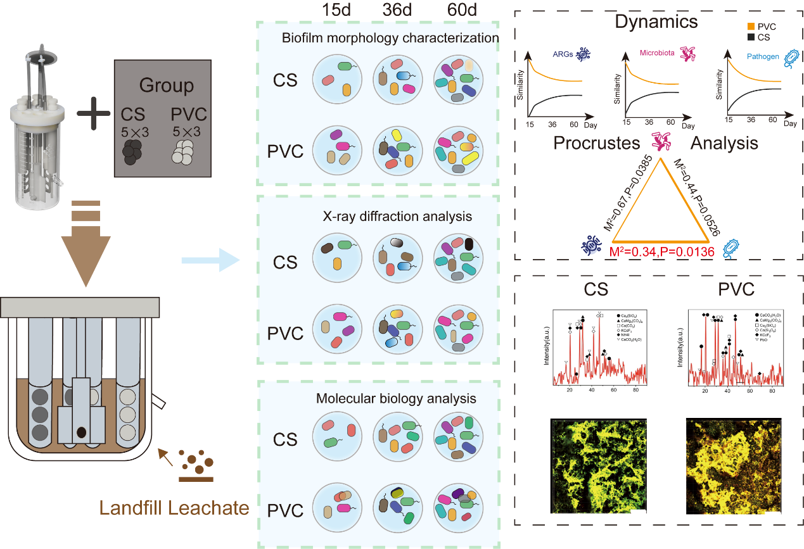

课题组关于典型环境表面抗生素抗性基因富集的工作被 ISME Communications 录用
课题组以 “Potential pathogens drive ARGs enrichment during biofilms formation on environmental surfaces” 为题发表研究成果，聚焦典型环境表面上抗生素抗性基因的富集过程及其驱动机制。

研究构建了 PVC 与碳钢表面生物膜模型，在污染胁迫下考察微生物群落、病原体与 ARGs 的协同演化。结果表明，尽管潜在病原体在群落中的相对丰度不足 6%，却承担了近一半的 ARGs 宿主功能，是抗性扩散的关键载体。
该成果不仅揭示了病原体驱动环境表面 ARGs 富集的关键机制，也为抗性风险管理提供了新的理论支撑。